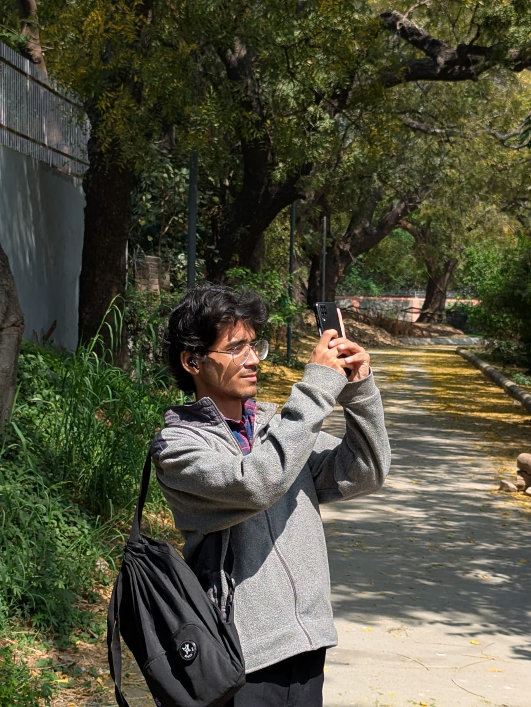

about me
last modified on oct 19, 2025
hello, colorful people! i'm anurag just a fellow guy here trying to make peace with things. to be more specific? life in general.
a little about me: i'm a student, but not the kind that fits neatly into labels like nerd or geek. if anything, i'd like to call myself a vagabond - not of places, but of thoughts. my mind drifts from one interest to another, still not searching for something to blend in with, but just maybe tryig to embrace the fact that i don't. maybe thats my way of living.
i can't give you a list of what defines me, maybe cause i don't think a human can ever be fully defined. as we are not just something made up of flesh and bones, nor are we neatly engraved with words and phrases. if anything, we're unstructured buildings; collapsing, expanding, overflowing with emotions with certain thoughts that keeps slipping and falling before we can catch a grasp of them. we are like the banner that says under construction, but never really gets completed.
but what i can tell you about myself is that my curiosity has stretched from the complexities of the human brain to the vastness of space and time(couldn't find a better figure of speech). did i ever fully understand any of it? no, nah, not really. but that's the amusing part.
to be honest, i dont think i know much about myself like every other person. i just project onto things, wondering maybe i can be this, or that, or maybe something(polar bear) and somewhere in between, i find the scatterd pieces of myself.
interesting, isn't it? yep, thats all about me. for now.
